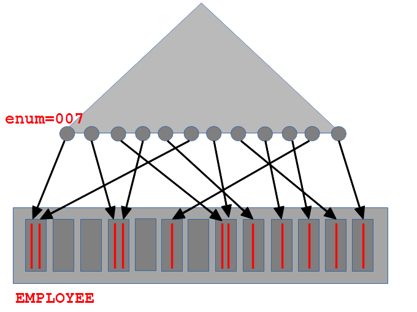
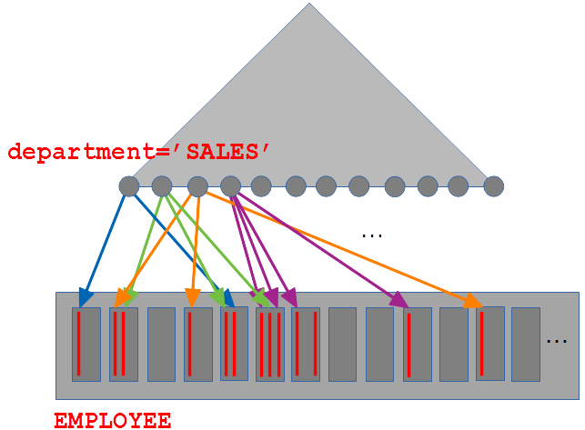
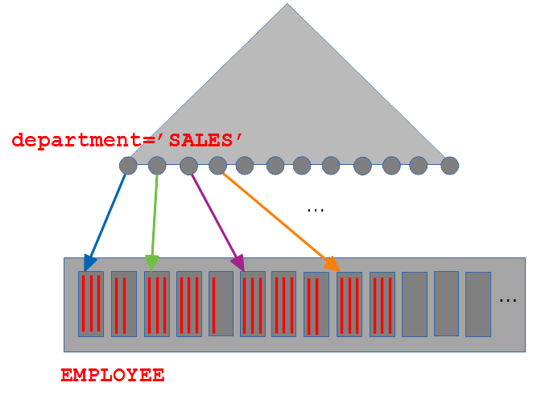
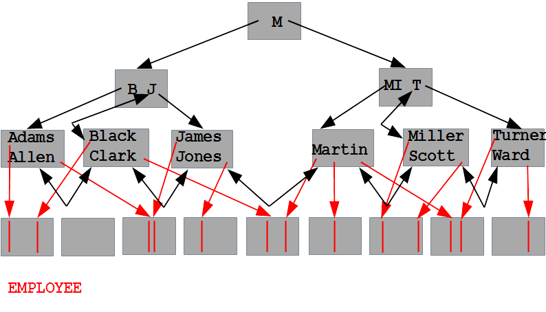

SELECT * FROM EMPLOYEE WHERE enum = 007;
SELECT * FROM EMPLOYEE WHERE enum = 007 AND department = 'MI6';
SELECT enum FROM EMPLOYEE WHERE enum = 007;
SELECT COUNT(*) FROM EMPLOYEE;
SELECT COUNT(enum) FROM EMPLOYEE;
SELECT COUNT(name) /* Only if name IS NOT NULL */ FROM EMPLOYEE;
SELECT enum FROM EMPLOYEE;
SELECT enum, COUNT(*) FROM EMPLOYEE GROUP BY enum;
SELECT enum FROM EMPLOYEE ORDER BY enum;
SELECT * FROM EMPLOYEE WHERE name = 'James';
SELECT * FROM EMPLOYEE WHERE name = 'James' and department = 'MI6';
SELECT count(*) FROM EMPLOYEE WHERE name = 'James'
SELECT * FROM EMPLOYEE WHERE name = 'James' and department = 'MI6';
SELECT count(*) FROM EMPLOYEE WHERE name = 'James' and department = 'MI6';
SELECT * FROM EMPLOYEE WHERE name = 'James' and department = 'MI6' and salary > 1000;
SELECT * FROM EMPLOYEE WHERE enum > 300;
SELECT count(*) FROM EMPLOYEE WHERE enum < 007;
SELECT * FROM EMPLOYEE WHERE enum > 300 and salary > 1000;
SELECT * FROM EMPLOYEE WHERE name > 'James';
SELECT count(*) FROM EMPLOYEE WHERE name <= 'James';
SELECT * FROM EMPLOYEE WHERE name = 'James' and department > 'MI6';
SELECT * FROM EMPLOYEE WHERE name > 'James' and salary > 1000;
SELECT name, count(*) FROM EMPLOYEE WHERE name > 'James' and salary > 1000 GROUP BY name;
SELECT * FROM EMPLOYEE WHERE name > 'James' and salary > 1000 ORDER BY name;
SELECT * FROM EMPLOYEE WHERE department = 'MI6;
SELECT * FROM EMPLOYEE WHERE department > 'MI6;
SELECT name, department FROM EMPLOYEE;
SELECT name, department, count(*) FROM EMPLOYEE GROUP BY name, department;
SELECT * FROM DEPARTMENT WHERE dname = 'MI6';
SELECT * FROM DEPARTMENT WHERE dname = 'MI6' AND budget > 10000;
SELECT * FROM DEPARTMENT WHERE budget = 10000;
CREATE INDEX DEPT_IDX_BUDGET ON DEPARTMENT(budget);
SELECT * FROM DEPARTMENT WHERE budget = 10000 and chairperson = 'James';
CREATE INDEX DEPT_IDX_BC ON DEPARTMENT(budget,chairperson);
SELECT DISTINCT chairperson FROM DEPARTMENT;
CREATE INDEX DEPT_IDX_CHAIR ON DEPARTMENT(chairperson);
SELECT * FROM DEPARTMENT ORDER BY budget;
CREATE INDEX DEPT_IDX_BUDGET ON DEPARTMENT(budget);
SELECT chairperson, budget, count(*) FROM DEPARTMENT GROUP BY budget, chairperson;
CREATE INDEX DEPT_IDX_BC ON DEPARTMENT(budget,chairperson);
SELECT chairperson, budget, count(*) FROM DEPARTMENT GROUP BY chairperson, budget;
CREATE INDEX DEPT_IDX_CB ON DEPARTMENT(chairperson,budget);